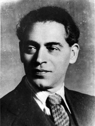

Борис Михайлович Иофан (1891-1976) – один из крупнейших и лучших советских зодчих - родился в 1891 г. в
Одессе. Там же прошло и его детство. Еще мальчиком Иофан увлекается
рисованием и решает в будущем стать живописцем.
В 12 лет он поступает на живописное отделение художественного училища. Позже,
под влиянием товарищей, Иофан переходит с живописного на архитектурное
отделение. В 1911 г. он заканчивает училище и получает диплом об окончании
курсов и звание техника-архитектора. По отбытии военной службы Иофан практикует
в Петербурге подмастерьем у известных архитекторов А.О. Таманяна, И.И.
Долгинова, частично работает у своего старшего брата Дмитрия. Изучая
произведения русского классицизма, молодой архитектор мысленно все больше
обращался к истокам архитектуры.
В 1914 г. Иофан уезжает в
Италию, в которой пребывает 10 лет. Окончание художественного училища дало
Иофану право поступить сразу на третий курс Высшего института изящных искусств
в Риме. Большой след в жизни Иофана оставил архитектор Армандо Бразини, его
будущий соперник в конкурсе на проект Дворца Советов в Москве. В 1916 г. Иофан
успешно заканчивает Высший институт изящных искусств и начинает работать
самостоятельно. Он много строит в Италии (Рим, Аквиль, Тиволи, Тоскана и др.).
Затем заканчивает курс в Высшей инженерной школе. В 1921 г. вступает в
итальянскую компартию.
В 1924 г. Иофан возвращается
в СССР. Его привозит в Москву А.И. Рыков, с которым он познакомился в Риме.
Рыков находился в Италии на лечении после перенесенного инфаркта. Он предлагает
Иофану строить новую советскую жизнь, новую социалистическую архитектуру –
радостную, величественную и помпезную. Иофана заинтересовало это предложение
прежде всего потому, что он мечтал строить крупномасштабные общественные
сооружения и в реалиях советской действительности ему открывались заманчивые
перспективы.
Борис Иофан стал крупной и
значимой фигурой советского зодчества. В Москве по его проектам были построены
удобные и функциональные жилые дома, общественные и учебные заведения. Первым
жилым комплексом, построенным в Москве, стали дома на Русаковской улице (1925
г.) с прекрасной экономичной планировкой квартир и гармоничным экстерьером.
Крупнейшим реализованным замыслом архитектора стал комплекс
Дома ЦИК и СНК СССР на Берсеневской набережной (1927-1931). Это сооружение является
важной вехой на творческом пути зодчего. Возведенный в эпоху увлечения идеей
домов-коммун, этот дом существенно отличался от них. Он содержал в себе, кроме
жилья, большое количество пристроенных общественных помещений: клуб с
театральным залом (ныне театр Эстрады), самый большой тогда в Европе кинотеатр
«Ударник» на 1600 зрителей, универмаг с продуктовым и промтоварным отделениями,
столовую, спортзал, библиотеку, механическую прачечную, почту и сберкассу. Дом
имел на себе отпечаток времени, выраженный в аскетизме внешнего облика. Тогда
господствовал строгий и лаконичный конструктивизм, отличительными чертами
которого были простые, логически геометризованные формы. Мрачно-серые стены
создавали впечатление несокрушимой мощи, подавляющей своим величием, что явно
выделяло это сооружение среди построек позднего конструктивизма и, очевидно,
должно было вносить в архитектурный образ дома некий признак могущества и
несокрушимости власти, которой он принадлежал. Некоторое разнообразие в это
вносили фонтаны, размещенные архитектором во внутренних дворах комплекса, в
память о его пребывании в Италии.
На участке более трех гектар, ограниченном Берсеневской
набережной, улицей Серафимовича и обводным каналом, на трех с половиной тысячах
свай было возведено около полумиллиона кубометров жилой и общественной площади,
что даже по сегодняшним масштабам является огромным строительством. В доме было
505 квартир, в которых было все для удобного проживания. Дом Правительства был
первым и последним объектом элитного жилья, к которому применимо определение -
простой, аскетичный объем. Все, последовавшие за ним, дома для советской элиты
были тесно связаны с изменившейся творческой направленностью советской
архитектуры, взявшей курс на освоение классического наследия.
Главной темой творчества Бориса Иофана было проектирование
монументально-грозного и величественного Дворца Советов, который должен был
встать практически напротив «Дома на набережной» на месте взорванного в декабре
1931 года Храма Христа Спасителя. Идея создания ДС была предложена С.М. Кировым
в 1922 г. на первом Всесоюзном съезде Советов. Выигравший на Международном
конкурсе проект архитекторов Б. М. Иофана, акад. В.А. Щуко и проф. В.Г.
Гельфрейха был одобрен Правительством в 1934 г., а окончание сооружения по
постановлению XVIII съезда партии
намечалось на 1942 г.
Размеры здания потрясали всякое воображение – высота 416
метров, вес 2 млн. тонн, общий объем 7 млн. кубометров, что примерно равнялось
сумме объемов 6 (!) знаменитых нью-йоркских небоскребов.
Разработка проекта продолжалась до конца 1930-х годов.
Строительство было начато в 1937 г., и к 1939 г. были закончены фундаменты
высотной части постройки. В 1940 - первой половине 1941 гг. началась установка
стального каркаса, для которого была разработана специальная высококачественная
сталь с маркировкой «ДС». Для строительства Дворца Советов был создан
Московский камнеобрабатывающий комбинат, благодаря которому впоследствии одета
в гранит была вся Москва (мосты, высотные дома, новый Храм Христа Спасителя,
метро). «Дворец Советов будет стоять точно таким же, каким мы увидим его в
ближайшие годы. Столетия не оставят на нем своих следов. Мы выстроим его таким,
чтобы он стоял, не старея, вечно», - писал Н. Атаров.
После войны стало ясно, что с таким огромным проектом не
справиться. Кроме того, в облике Дворца необходимо было увековечить и победу в
войне. Работа коллектива под руководством Иофана была продолжена: предлагалось
множество решений, в том числе и уменьшение высоты здания. Проектирование
прервал объявленный в 1956 г. Всесоюзный конкурс на новый проект ДС, сооружение
которого предполагалось на юго-западе столицы, но так же не было осуществлено.
Последний гвоздь в гроб ДС был забит в 1957 г., когда станцию метро «Дворец
Советов» переименовали в «Кропоткинскую». На фундаментах ДС был построен самый
крупный в Европе открытый бассейн «Москва».
Борис Михайлович, будучи автором такого гиганта, высказывал
мысль о поддержке этой мощной вертикали зданиями-спутниками, которые придавали
бы Москве силуэт не плоскостного города, а города с живописным высотным силуэтом.
Дело в том, что в начале 20-х - конце 30-х гг. XX
века в Москве было снесено огромное количество церквей и колоколен, которые
выражали собой очень красивый «живой» силуэт. В связи с разрушениями Москва его
утратила и превратилась практически в «плоскостной», «целинный» город. Поэтому
роли высотных зданий, поддерживающих доминанту ДС, придавалось огромное значение.
Помимо рельефной, идеологической, они выполняли также и топографическую функцию.
Каждое здание являло собой ориентир в городской среде. Таким образом, появлению
высотных зданий мы обязаны и Иофану.
В то время упорно продвигалась перспектива развития Москвы
на юго-запад (в частности, Воробьевы горы). Это очень выгодная точка, работающая
на всю Москву. Недаром именно на Воробьевых горах архитекторы хотели осуществить
свои самые масштабные и грандиозные проекты (Л. Витберг – Храм Христа
Спасителя, Н. Ладовский – Красный стадион, И. Леонидов – Институт библиотековедения
им. Ленина). Первой и самой грандиозной из всех высоток утвердили здание
гостиницы на Воробьевых горах (позже проект трансформировали в здание МГУ, но
идея, заложенная в нем изначально, сохранилась). Эту работу поручили Иофану,
так как он возглавлял трест по строительству высотных сооружений (Управление
ДС). Чтобы подчеркнуть масштабность здания и его влияние на город, Иофан
проектирует его над самой бровкой Москва-реки, то есть у самого края Воробьевых
гор. Такое решение не понравилось Сталину, но Иофан долго и упорно продолжал
его отстаивать. Это было роковой ошибкой. В 1947 г. проект Иофана передают
коллективу во главе с ленинградцем Львом Рудневым. Здание построили в
первоначально установленные сроки (открытие 1.09.1953 г.) практически в
задуманном Иофаном виде. Много позже ответственный секретарь комиссии по
строительству ДС, друг и соратник Бориса Иофана, автор замечательной монографии
об архитекторе Исаак Эйгель рассказывал, что проект не утвердили потому, что
под выбранным Иофаном местом проходили важные правительственные коммуникации.
Третьим наиболее значимым сооружением в биографии мастера
был великолепный, поразивший весь мир своей мощью и колоритом, динамикой и порывом,
своей внутренней энергией павильон СССР на Международной выставке в Париже 1937
г.. На выставке павильоны СССР и Германии располагались один против другого,
демонстрируя политическую конфронтацию двух держав в пространственном образе.
Они были похожи на двух боксеров, готовых сойтись в смертельной схватке.
Советский павильон уже строился, когда автор павильона Германии Альберт Шпеер
только приступал к проекту. Подкупив французских служащих, он проник в
помещение, где работал Иофан. Шпеер писал: «При посещении Парижа я случайно
забрел в помещение, где находился скрывавшийся в тайне проект советского
павильона. На высоком пьедестале триумфально шагали две фигура, как бы наступая
на наш павильон. Тогда я запроектировал кубическую массу, расчлененную тяжелыми
пилонами, которая должна была казаться останавливающей этот натиск, в то время
как с карниза взирал сверху вниз на русскую пару орел со свастикой в когтях». В
этом тексте интересно описание не только формы («кубическая масса»), в которую
выливалось соперничество, но и явно казавшееся Шпееру естественным перенесение
соревновательности за пределы формирования художественных ценностей и
культурных значений. В сопоставлении павильонов у Шпеера преобладали мотивы,
связанные с политической конфронтацией. Показательно, что оба архитектора –
Иофан и Шпеер – получили Золотые медали от организаторов, озабоченных тем,
чтобы сохранить мир и не создавать напряжение между двумя могущественными государствами.
Бросалось в глаза похожесть архитектурного облика павильонов, их мощный
демонстративный характер. Наш павильон безусловно был лучше. Это было
сооружение, запроектированное на одном дыхании, реализация первоначального
эскиза, что для «вариантщика» Иофана было скорее всего единственной постройкой
такого рода. «Неудержимый динамизм художественного решения», «сгусток рвущейся
вперед и вверх энергии», «символ нового мира» – так отзывались о павильоне. Это
была победа, триумф, радость. «Этот экспонат останется в памяти участников
ЭКСПО-37 так же, как Эйфелева башня на этой же выставке 1889 года» (Д. Аркин).
Павильон Иофана – воплощение единого целого двух искусств. Архитектура и
скульптура сливались воедино. Вера Мухина говорила: «Тут надо было найти такое
равновесие и соподчинение, чтобы здание и скульптура одно без другого не могли
существовать… Торжественную поступь (придуманную Иофаном), я превратила во
всесокрушающий порыв». Много труда, сил, нервов стоила Вере Игнатьевне ее
скульптура. При ее установке в 1939 г. на 10-метровый постамент перед главным
входом на ВСХВ скульптура во многом проиграла. Ведь павильон был высотой в 24
метра. «Статуя ползает по земле, все точки зрения и композиционные эффекты
уничтожены», -- негодовала Мухина. Оба – Иофан и Мухина - переживали это до
конца своих дней и добивались установки скульптуры на более высоком уровне. А
павильон СССР до сих пор стоит в Париже.
Смерть настигла Бориса Иофана за чертежной доской, на
которой была наколота калька с эскизом пьедестала скульптуры «Рабочий и
колхозница». Это случилось в марте 1976 года.
Почти полвека он шел рука об руку со своим другом, супругой
и музой Ольгой Фабрициевной Иофан. После ее смерти он вспоминал о ней самыми теплыми
словами: «Есть люди, которые не занимаются непосредственно творческой работой,
по их проектам не сооружаются дома, они не делают открытий в науке, но у них
есть замечательный талант строить жизнь других, создавать атмосферу для большой
творческой работы. Таким талантом обладала Ольга Фабрициевна…».
В основу материала легла
следующая литература:
1.
И.Ю. Эйгель, «Борис
Иофан», М. 1978 г.
2.
О.П. Воронова, «В.И.
Мухина», М. 1976 г.
3.
Материалы научной
конференции «Випперовские чтения – 1996», М. 1996 г.:
--А.В. Иконников, «Утопия в архитектуре между двумя мировыми войнами»
--Б. Шульц, «Особый случай» или логика развития?»
4.
Н.Ш. Сагоян,
«Иллюстрированный словарь архитектурных терминов и понятий», Волгоград, 1999 г.
5. П.А. Дружинин, «Дворец
Советов. Проект академика Щусева», М. 2001 г.
6.
Н.С. Атаров, «Дворец
Советов», М., 1940 г.
7.
И.С. Чередина,
«Московское жилье конца XIX
– начала XX века», М. МАРХИ, 2004 г.
8.
М.П. Коршунов, В.Р.
Терехова «Тайны и легенды Дома на набережной», М. «Слово», 2002 г.
9.
Лекционные материалы
ГНИМА им. А.В. Щусева
Сергей Баклашов
Здания,
спроектированные Б.М. Иофаном
1925 г. - Русаковская
ул., 4 (9 трехэтажных секционных дома);1927 г. - Московская сельскохозяйственная Академия им. Тимирязева
(ул. Верхняя, 4а, химический факультет и 12-й учебный корпус);
- опытная станция при Химическом институте, ул. Обуха, 10;
1928-31 гг. - 1-й Дом ЦИК и СНК СССР («Дом на набережной»);
1929-34 гг. - санаторий «Барвиха»;
1931 г. - проект Дворца Советов;
1937 г. - павильон СССР на Международной выставке в Париже
(скульптор – В. Мухина);
1939 г. - павильон СССР на Международной выставке в Нью-Йорке;
1938-44 гг. - станция метро «Бауманская»;
1944-47 гг. - лабораторный корпус Института физических проблем АН СССР;
лаборатория академика П.Л. Капицы;
- реконструкция и восстановление Театра Вахтангова;
- проект восстановления городов Новороссийска и Сталинграда;
1947-48 гг. - работа над проектом высотных зданий, нового здания МГУ;
1962 г. - Институт физической культуры (Сиреневый бульвар, 4) – последний дом, построенный Иофаном.
Проезд троллейбусами 1, 4, 33, 62 до остановки «Кинотеатр “Ударник”» (станции метро «Кропоткинская», «Октябрьская», «Полянка»).
Рекомендуем в будние дни ехать до станции «Кропоткинская», выход к Храму, далее 2 остановки троллейбусами 1 или 33
либо пешком через пешеходный мост через Москву-реку.
По Берсеневской набережной пройти Театр эстрады, войти во двор через арку и слева, пройдя подъезд № 1, найти наше крылечко.
вход справа от первого подъезда.
Почтовый адрес: Москва 119072, ул. Серафимовича,
Государственный краеведческий музей "Дом на Набережной",
телефон /факс: 8 (495) 959-49-36.
Дизайн: Зоркин Василий.
museumdom@yandex.ru